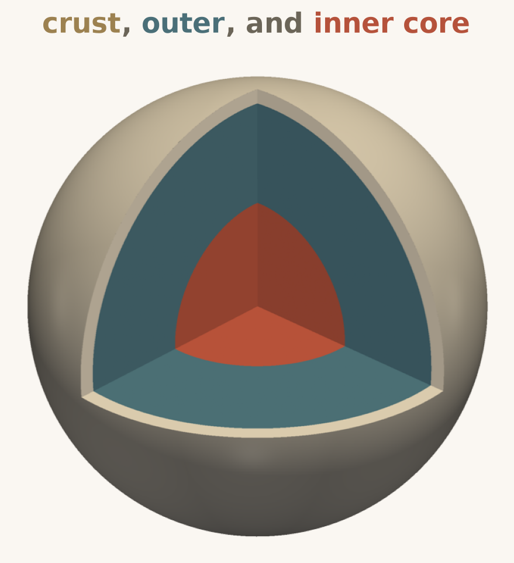
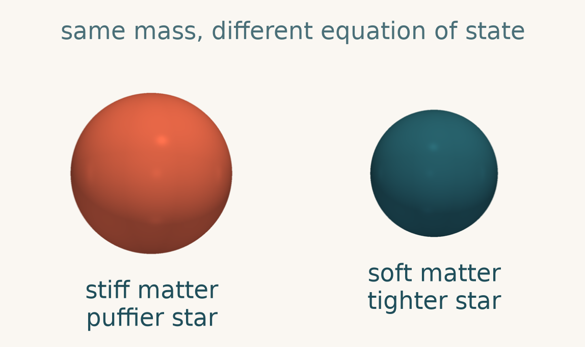
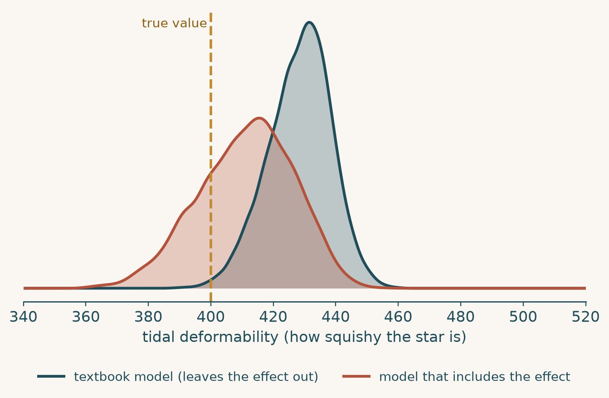
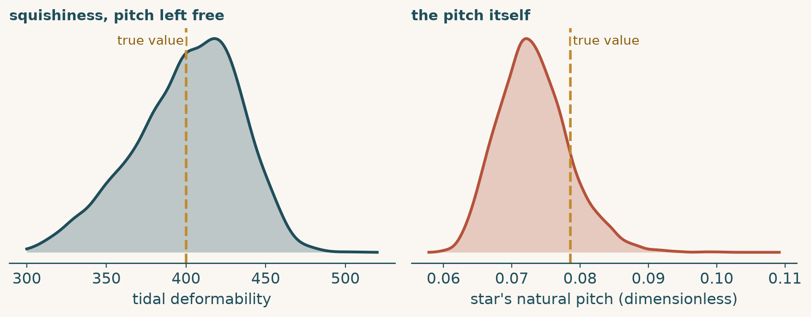
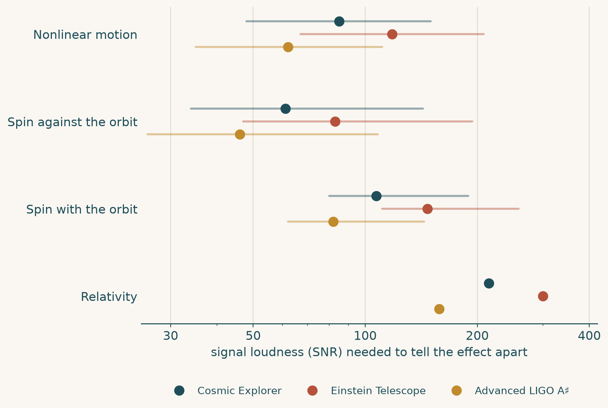

Listening to two dead stars
In 2017, detectors on Earth felt a faint stretch and squeeze of space itself. It was the last 100 seconds of two neutron stars, each about as wide as a city, circling each other faster and faster until they collided.
That ripple, a gravitational wave, is a chirp: it rises in pitch as the stars close in. Hidden in its shape is information about what the stars are made of.
The chirp is a recording of the stars' final dance, and we can read it.
A teaspoon that weighs a mountain
A neutron star packs more than the Sun's mass into a ball about 23 km across, so dense that a teaspoon of it would weigh as much as a mountain. In its core, matter is squeezed beyond the density of an atomic nucleus, a regime no laboratory can reproduce.
How matter behaves there is set by its equation of state. A stiff equation of state gives a larger, puffier star; a soft one gives a smaller, tighter star. Nobody knows which is right, and that is exactly what we want to find out.


Measuring a neutron star's stiffness tells us about matter at its densest.
Squeezed by a neighbor
As the two stars draw close, each one's gravity stretches the other, the way the Moon raises tides in our oceans. A soft star stretches more; a stiff star stretches less.
That stretchiness is called the tidal deformability, and it leaves a small, measurable shift in the gravitational-wave chirp. It is our squishiness meter.
Tidal deformability is the main property we use to narrow down the equation of state.
Stars sing like bowls
A Tibetan singing bowl stays silent until you rub a mallet around its rim. Rub too slowly or too fast and you get a weak murmur; rub at just the right rate, matching the bowl's natural tone, and it rings out loud.
A mallet circles the bowl
and its rim bulges to follow it
A companion star orbits
and the star's surface bulges to follow it
A neutron star is the bowl, and its orbiting companion is the mallet circling the rim. The star's natural tone, or pitch, is its fundamental mode. As the orbit speeds up, the "rubbing rate" sweeps upward until it matches that tone: tidal resonance. The star sings, and the song leaves a strong mark on the gravitational waves.
Where the star sings, and how loudly, depends on its exact pitch.
Is the bowl's pitch what we think?
Analyses usually assume the star's pitch from a textbook shortcut tied to its squishiness (tidal deformability); call that the textbook model. For a typical star that pitch lies just beyond the moment of merger, so the stars collide before the bowl reaches full voice. But the song is already building as they approach, and a real star in a real binary is retuned by effects that shortcut leaves out, pulling the pitch closer or pushing it away:
Nonlinear motion
Near merger the sloshing is large, not gentle, and the pitch drops, more and more as the stars close in.Spin
A spinning star's pitch shifts up or down by a fixed amount, depending on its spin direction.Relativity
Redshift and frame dragging combine to nudge the pitch slightly upward.A slightly wrong pitch shifts where the star sings, and the chirp records it.
Fooling our own analysis, on purpose
We simulated a signal that includes the nonlinear retuning of the pitch. Then we analyzed it with the textbook model, the one that assumes the textbook pitch, and checked what it concluded about the star.
The fit uses Hamiltonian Monte Carlo, which you can picture as a ball rolling over a landscape of how well each guess matches the signal. Where the ball spends its time is what the data support.
We know the true answer, so we can see exactly how wrong the textbook model gets it.
The textbook model gets it wrong
Leaving out the nonlinear retuning, the analysis reads the star as about 8% squishier than it truly is. This sits on top of an earlier known error of roughly 30% from ignoring resonance altogether.
Why? The model ties the star's pitch to its squishiness. If the pitch is mis-assumed, the error gets passed straight into the squishiness, and from there into the equation of state.

How loud does a signal need to be before this matters? Loudness is measured by the signal-to-noise ratio (SNR); the first detected graviational waves from a neutron-star merger, GW170817, had an SNR of about 30. A louder signal narrows the uncertainty, but the bias stays put. Try it:
Where does the error come from?
We repeated the fit but let the star's pitch float freely instead of tying it to its squishiness. Now the squishiness comes out right, and the pitch is the quantity that is off, too low by roughly a tenth. The textbook model hides that pitch error by passing it into the squishiness.

A small wrong assumption about the pitch becomes a systematic error in the star's squishiness.
Many quiet voices
One extremely loud event can reveal the effect, but events that loud are expected to be uncommon. Combining many events helps: stack 16 events, and the statistical uncertainty shrinks until the bias stands out clearly.
Different effects need different loudness to show up at all. This chart, from the paper's Table 2, shows the SNR at which each effect becomes distinguishable in three next-generation detectors.

Spin
Spin can mimic a different pitch almost perfectly, so the waveforms look nearly identical. Used cleverly, it could also measure a star's moment of inertia from gravitational waves alone.Relativity
Redshift and frame dragging partly cancel, so this effect is the hardest to spot and needs a very loud signal.Next-generation detectors are expected to reach the loudness where these effects matter.
Why it matters
Pinning down the equation of state means measuring a neutron star's radius to within about a tenth of a kilometer. A systematic error of 8% in squishiness is enough to wash that out.
Our recommendation: do not blindly lean on the textbook link between a star's pitch and its squishiness. Treat the pitch as something to measure, or build in the retuning effects.
Go deeper: what this study does and does not claim
This is a proof-of-principle study. To isolate each effect we used simplified stars (all with the same radius, and a Newtonian treatment of the nonlinear motion), took one effect at a time, and used noise-free simulated signals. No waveform model yet includes every effect at full accuracy, so the numbers say how much these effects can matter, not exactly how much they will.
The nonlinear effect is, if anything, understated here: the paper drops a correction that would make the bias larger.
The stars are singing. We just need to be sure we know which note we are listening for.